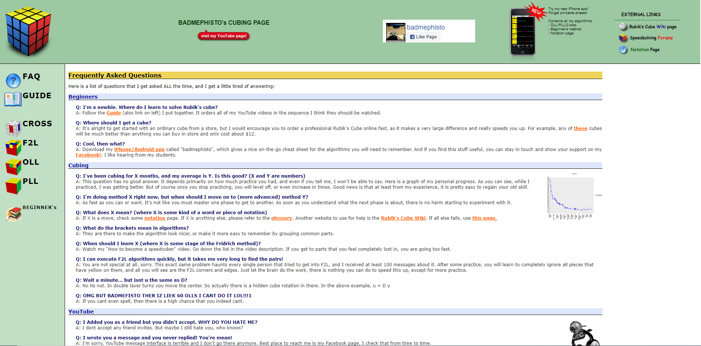
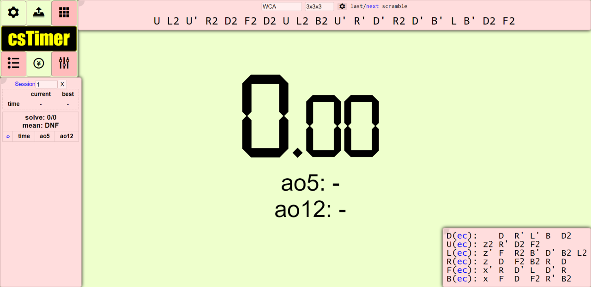

Here are some useful links to resources I used when learning how to solve the Rubik’s Cube and get faster.A YouTube tutorial of the Beginner’s Method if text doesn’t suit you:
YouTube TutorialAn entire website dedicated to F2L and OLL and PLL algorithms:
Badmephisto Website Finally, a timer so that you can keep track of your solves and your improvement over time:
Timer Website 